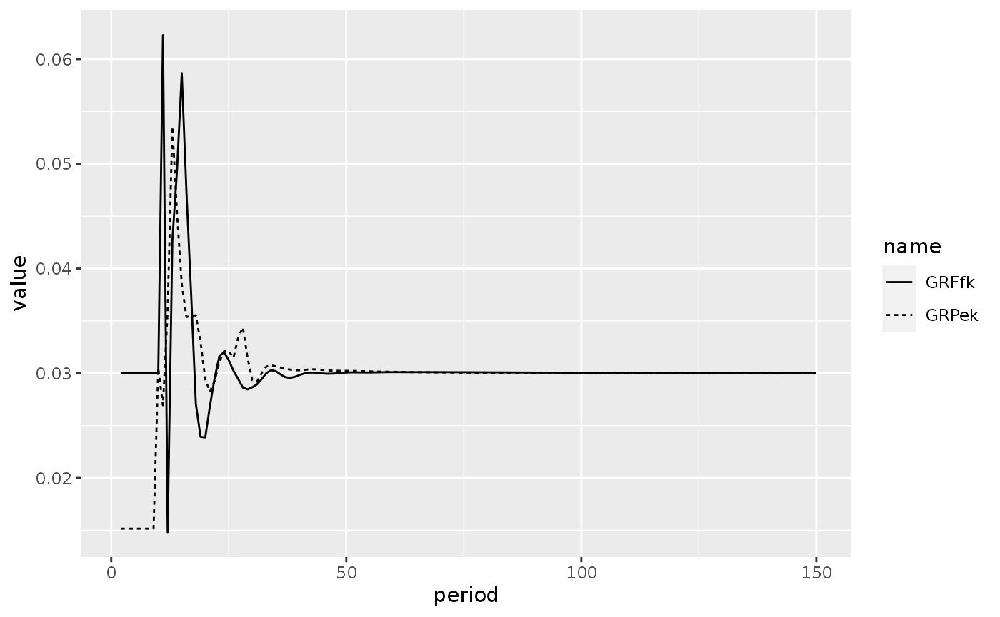

library(sfcr)
library(tidyverse)
#> ── Attaching packages ─────────────────────────────────────── tidyverse 1.3.0 ──
#> ✔ ggplot2 3.3.2 ✔ purrr 0.3.4
#> ✔ tibble 3.0.4 ✔ dplyr 1.0.2
#> ✔ tidyr 1.1.2 ✔ stringr 1.4.0
#> ✔ readr 1.4.0 ✔ forcats 0.5.0
#> ── Conflicts ────────────────────────────────────────── tidyverse_conflicts() ──
#> ✖ dplyr::filter() masks stats::filter()
#> ✖ dplyr::lag() masks stats::lag()In this notebook I present the implementation of the GROWTH model from Godley and Lavoie (2007 ch. 11).
As a side note, I must say that this model is quite complicated to simulate, and I only could do it by using exactly the same equations as Zezza in his code, although some of the equations are different from the ones in the book. In this case, it means replicating exactly the same initial values in order to get a meaningful result.
Equations, parameters, and initial values
growth_eqs <- sfcr_set(
Yk ~ Ske + INke - INk[-1], # 11.1 : Real output
Ske ~ beta*Sk + (1-beta)*Sk[-1]*(1 + (GRpr + RA)), # 11.2 : Expected real sales
INke ~ INk[-1] + gamma*(INkt - INk[-1]), # 11.3 : Long-run inventory target
INkt ~ sigmat*Ske, # 11.4 : Short-run inventory target
INk ~ INk[-1] + Yk - Sk - NPL/UC, # 11.5 : Actual real inventories
Kk ~ Kk[-1]*(1 + GRk), # 11.6 : Real capital stock
GRk ~ gamma0 + gammau*U[-1] - gammar*RRl, # 11.7 : Growth of real capital stock
U ~ Yk/Kk[-1], # 11.8 : Capital utilization proxy
RRl ~ ((1 + Rl)/(1 + PI)) - 1, # 11.9 : Real interest rate on loans
PI ~ (P - P[-1])/P[-1], # 11.10 : Rate of price inflation
#Ik ~ (Kk - Kk[-1]) + delta*Kk[-1], # 11.11 : Real gross investment
Ik ~ (Kk - Kk[-1]) + delta * Kk[-1],
# Box 11.2 : Firms equations
# ---------------------------
Sk ~ Ck + Gk + Ik, # 11.12 : Actual real sales
S ~ Sk*P, # 11.13 : Value of realized sales
IN ~ INk*UC, # 11.14 : Inventories valued at current cost
INV ~ Ik*P, # 11.15 : Nominal gross investment
K ~ Kk*P, # 11.16 : Nomincal value of fixed capital
Y ~ Sk*P + (INk - INk[-1])*UC, # 11.17 : Nomincal GDP
# Box 11.3 : Firms equations
# ---------------------------
# 11.18 : Real wage aspirations
omegat ~ exp(omega0 + omega1*log(PR) + omega2*log(ER + z3*(1 - ER) - z4*BANDt + z5*BANDb)),
ER ~ N[-1]/Nfe[-1], # 11.19 : Employment rate
# 11.20 : Switch variables
z3a ~ if (ER > (1-BANDb)) {1} else {0},
z3b ~ if (ER <= (1+BANDt)) {1} else {0},
z3 ~ z3a * z3b,
z4 ~ if (ER > (1+BANDt)) {1} else {0},
z5 ~ if (ER < (1-BANDb)) {1} else {0},
W ~ W[-1] + omega3*(omegat*P[-1] - W[-1]), # 11.21 : Nominal wage
PR ~ PR[-1]*(1 + GRpr), # 11.22 : Labor productivity
Nt ~ Yk/PR, # 11.23 : Desired employment
N ~ N[-1] + etan*(Nt - N[-1]), # 11.24 : Actual employment --> etan not in the book
WB ~ N*W, # 11.25 : Nominal wage bill
UC ~ WB/Yk, # 11.26 : Actual unit cost
NUC ~ W/PR, # 11.27 : Normal unit cost
NHUC ~ (1 - sigman)*NUC + sigman*(1 + Rln[-1])*NUC[-1], # 11.28 : Normal historic unit cost
# Box 11.4 : Firms equations
# ---------------------------
P ~ (1 + phi)*NHUC, # 11.29 : Normal-cost pricing
phi ~ phi[-1] + eps2*(phit[-1] - phi[-1]), # 11.30 : Actual mark-up --> eps2 not in the book
# 11.31 : Ideal mark-up
#phit ~ (FDf + FUft + Rl[-1]*(Lfd[-1] - IN[-1]))/((1 - sigmase)*Ske*UC + (1 + Rl[-1])*sigmase*Ske*UC[-1]),
phit ~ (FUft + FDf + Rl[-1]*(Lfd[-1] - IN[-1])) / ((1 - sigmase)*Ske*UC + (1 + Rl[-1])*sigmase*Ske*UC[-1]),
HCe ~ (1 - sigmase)*Ske*UC + (1 + Rl[-1])*sigmase*Ske*UC[-1], # 11.32 : Expected historical costs
sigmase ~ INk[-1]/Ske, # 11.33 : Opening inventories to expected sales ratio
Fft ~ FUft + FDf + Rl[-1]*(Lfd[-1] - IN[-1]), # 11.34 : Planned entrepeneurial profits of firmss
FUft ~ psiu*INV[-1], # 11.35 : Planned retained earnings of firms
FDf ~ psid*Ff[-1], # 11.36 : Dividends of firms
# Box 11.5 : Firms equations
# ---------------------------
Ff ~ S - WB + (IN - IN[-1]) - Rl[-1]*IN[-1], # 11.37 : Realized entrepeneurial profits
FUf ~ Ff - FDf - Rl[-1]*(Lfd[-1] - IN[-1]) + Rl[-1]*NPL, # 11.38 : Retained earnings of firms
# 11.39 : Demand for loans by firms
Lfd ~ Lfd[-1] + INV + (IN - IN[-1]) - FUf - (Eks - Eks[-1])*Pe - NPL,
# NPL ~ NPLk*Lfs[-1], # 11.40 : Defaulted loans
NPL ~ NPLk * Lfs[-1],
Eks ~ Eks[-1] + ((1 - psiu)*INV[-1])/Pe, # 11.41 : Supply of equities issued by firms
# Rk ~ FDf/(Pe[-1]*Ekd[-1]), # 11.42 : Dividend yield of firms
Rk ~ FDf/(Pe[-1] * Ekd[-1]),
PE ~ Pe/(Ff/Eks[-1]), # 11.43 : Price earnings ratio
Q ~ (Eks*Pe + Lfd)/(K + IN), # 11.44 : Tobins Q ratio
# Box 11.6 : Households equations
# --------------------------------
# YP ~ WB + FDf + FDb + Rm[-1]*Md[-1] + Rb[-1]*Bhd[-1] + BLs[-1], # 11.45 : Personal income
YP ~ WB + FDf + FDb + Rm[-1]*Mh[-1] + Rb[-1]*Bhd[-1] + BLs[-1],
#YP ~ WB + FDf + FDb + Rm[-1]*Mh[-1] + Rb[-1]*Bhd[-1] + BLs[-1] + NL,
TX ~ theta*YP, # 11.46 : Income taxes
YDr ~ YP - TX - Rl[-1]*Lhd[-1], # 11.47 : Regular disposable income
YDhs ~ YDr + CG, # 11.48 : Haig-Simons disposable income
# !1.49 : Capital gains
CG ~ (Pbl - Pbl[-1])*BLd[-1] + (Pe - Pe[-1])*Ekd[-1] + (OFb - OFb[-1]),
# 11.50 : Wealth
V ~ V[-1] + YDr - CONS + (Pbl - Pbl[-1])*BLd[-1] + (Pe - Pe[-1])*Ekd[-1] + (OFb - OFb[-1]),
Vk ~ V/P, # 11.51 : Real staock of wealth
CONS ~ Ck*P, # 11.52 : Consumption
Ck ~ alpha1*(YDkre + NLk) + alpha2*Vk[-1], # 11.53 : Real consumption
YDkre ~ eps*YDkr + (1 - eps)*(YDkr[-1]*(1 + GRpr)), # 11.54 : Expected real regular disposable income
# YDkr ~ YDr/P - (P - P[-1])*Vk[-1]/P, # 11.55 : Real regular disposable income
YDkr ~ YDr/P - ((P - P[-1]) * Vk[-1])/P,
# Box 11.7 : Households equations
# --------------------------------
GL ~ eta*YDr, # 11.56 : Gross amount of new personal loans ---> new eta here
eta ~ eta0 - etar*RRl, # 11.57 : New loans to personal income ratio
NL ~ GL - REP, # 11.58 : Net amount of new personal loans
REP ~ deltarep*Lhd[-1], # 11.59 : Personal loans repayments
Lhd ~ Lhd[-1] + GL - REP, # 11.60 : Demand for personal loans
NLk ~ NL/P, # 11.61 : Real amount of new personal loans
# BUR ~ (REP + Rl[-1]*Lhd[-1])/YDr[-1], # 11.62 : Burden of personal debt
BUR ~ (REP + Rl[-1] * Lhd[-1]) / YDr[-1],
# Box 11.8 : Households equations - portfolio decisions
# -----------------------------------------------------
# 11.64 : Demand for bills
# YDr/V
#Md ~ Vfma[-1] * (lambda10 + lambda11*Rm[-1] - lambda12 * Rb[-1] - lambda13 * Rbl[-1] - lambda14 * Rk[-1] + lambda25 * (YP/V)),
Bhd ~ Vfma[-1]*(lambda20 + lambda22*Rb[-1] - lambda21*Rm[-1] - lambda24*Rk[-1] - lambda23*Rbl[-1] - lambda25*(YDr/V)),
# 11.65 : Demand for bonds
BLd ~ Vfma[-1]*(lambda30 - lambda32*Rb[-1] - lambda31*Rm[-1] - lambda34*Rk[-1] + lambda33*Rbl[-1] - lambda35*(YDr/V))/Pbl,
# 11.66 : Demand for equities - normalized to get the price of equitities
Pe ~ Vfma[-1]*(lambda40 - lambda42*Rb[-1] - lambda41*Rm[-1] + lambda44*Rk[-1] - lambda43*Rbl[-1] - lambda45*(YDr/V))/Ekd,
Mh ~ Vfma - Bhd - Pe*Ekd - Pbl*BLd + Lhd, # 11.67 : Money deposits - as a residual
Vfma ~ V - Hhd - OFb, # 11.68 : Investible wealth
VfmaA ~ Mh + Bhd + Pbl * BLd + Pe * Ekd,
Hhd ~ lambdac*CONS, # 11.69 : Households demand for cash
Ekd ~ Eks, # 11.70 : Stock market equilibrium
# Box 11.9 : Governments equations
# ---------------------------------
G ~ Gk*P, # 11.71 : Pure government expenditures
Gk ~ Gk[-1]*(1 + GRg), # 11.72 : Real government expenditures
PSBR ~ G + BLs[-1] + Rb[-1]*(Bbs[-1] + Bhs[-1]) - TX, # 11.73 : Government deficit --> BLs[-1] missing in the book
# 11.74 : New issues of bills
Bs ~ Bs[-1] + G - TX - (BLs - BLs[-1])*Pbl + Rb[-1]*(Bhs[-1] + Bbs[-1]) + BLs[-1],
GD ~ Bbs + Bhs + BLs*Pbl + Hs, # 11.75 : Government debt
# Box 11.10 : The Central banks equations
# ----------------------------------------
Fcb ~ Rb[-1]*Bcbd[-1], # 11.76 : Central bank profits
BLs ~ BLd, # 11.77 : Bonds are supplied on demand
Bhs ~ Bhd, # 11.78 : Household bills supplied on demand
Hhs ~ Hhd, # 11.79 : Cash supplied on demand --> Mistake on the book
Hbs ~ Hbd, # 11.80 : Reserves supplied on demand
Hs ~ Hbs + Hhs, # 11.81 : Total supply of cash
Bcbd ~ Hs, # 11.82 : Central bankd
Bcbs ~ Bcbd, # 11.83 : Supply of bills to Central bank
Rb ~ Rbbar, # 11.84 : Interest rate on bills set exogenously
Rbl ~ Rb + ADDbl, # 11.85 : Long term interest rate
Pbl ~ 1/Rbl, # 11.86 : Price of long-term bonds
# Box 11.11 : Commercial Banks equations
# ---------------------------------------
Ms ~ Mh, # 11.87 : Bank deposits supplied on demand
Lfs ~ Lfd, # 11.88 : Loans to firms supplied on demand
Lhs ~ Lhd, # 11.89 : Personal loans supplied on demand
Hbd ~ ro*Ms, # 11.90 Reserve requirements of banks
# 11.91 : Bills supplied to banks
Bbs ~ Bbs[-1] + (Bs - Bs[-1]) - (Bhs - Bhs[-1]) - (Bcbs - Bcbs[-1]),
# 11.92 : Balance sheet constraint of banks
Bbd ~ Ms + OFb - Lfs - Lhs - Hbd,
BLR ~ Bbd/Ms, # 11.93 : Bank liquidity ratio
# 11.94 : Deposit interest rate
Rm ~ Rm[-1] + z1a*xim1 + z1b*xim2 - z2a*xim1 - z2b*xim2,
# 11.95-97 : Mechanism for determining changes to the interest rate on deposits
z2a ~ if (BLR[-1] > (top + .05)) {1} else {0},
z2b ~ if (BLR[-1] > top) {1} else {0},
z1a ~ if (BLR[-1] <= bot) {1} else {0},
z1b ~ if (BLR[-1] <= (bot -.05)) {1} else {0},
# Box 11.12 : Commercial banks equations
# ---------------------------------------
Rl ~ Rm + ADDl, # 11.98 : Loan interest rate
OFbt ~ NCAR*(Lfs[-1] + Lhs[-1]), # 11.99 : Long-run own funds target
OFbe ~ OFb[-1] + betab*(OFbt - OFb[-1]), # 11.100 : Short-run own funds target
FUbt ~ OFbe - OFb[-1] + NPLke*Lfs[-1], # 11.101 : Target retained earnings of banks
NPLke ~ epsb*NPLke[-1] + (1 - epsb)*NPLk[-1], # 11.102 : Expected proportion of non-performaing loans
# FDb ~ Fb - FUb, # 11.103 : Dividends of banks
FDb ~ Fb - FUb,
Fbt ~ lambdab*Y[-1] + (OFbe - OFb[-1] + NPLke*Lfs[-1]), # 11.104 : Target profits of banks
# 11.105 : Actual profits of banks
Fb ~ Rl[-1]*(Lfs[-1] + Lhs[-1] - NPL) + Rb[-1]*Bbd[-1] - Rm[-1]*Ms[-1],
# 11.106 : Lending mark-up over deposit rate
ADDl ~ (Fbt - Rb[-1]*Bbd[-1] + Rm[-1]*(Ms[-1] - (1 - NPLke)*Lfs[-1] - Lhs[-1]))/((1 - NPLke)*Lfs[-1] + Lhs[-1]), # --> I added the lag term to Rm
FUb ~ Fb - lambdab*Y[-1], # 11.107 : Actual retained earnings
OFb ~ OFb[-1] + FUb - NPL, # 11.108 : Own funds of banks
CAR ~ OFb/(Lfs + Lhs),
Vf ~ IN + K - Lfd - Ekd * Pe, # Firm's wealth (memo for matrices)
#Vg ~ -Bs - BLs * Pbl,\
Ls ~ Lfs + Lhs, # Loans supply (memo for matrices)
)
growth_parameters = sfcr_set(
alpha1 ~ 0.75,
alpha2 ~ 0.064,
beta ~ 0.5,
betab ~ 0.4,
gamma ~ 0.15,
gamma0 ~ 0.00122,
gammar ~ 0.1,
gammau ~ 0.05,
delta ~ 0.10667,
deltarep ~ 0.1,
eps ~ 0.5,
eps2 ~ 0.8,
epsb ~ 0.25,
epsrb ~ 0.9,
eta0 ~ 0.07416,
etan ~ 0.6,
etar ~ 0.4,
theta ~ 0.22844,
# lambda10 ~ -0.17071,
# lambda11 ~ 0,
# lambda12 ~ 0,
# lambda13 ~ 0,
# lambda14 ~ 0,
# lambda15 ~ 0.18,
lambda20 ~ 0.25,
lambda21 ~ 2.2,
lambda22 ~ 6.6,
lambda23 ~ 2.2,
lambda24 ~ 2.2,
lambda25 ~ 0.1,
lambda30 ~ -0.04341,
lambda31 ~ 2.2,
lambda32 ~ 2.2,
lambda33 ~ 6.6,
lambda34 ~ 2.2,
lambda35 ~ 0.1,
lambda40 ~ 0.67132,
lambda41 ~ 2.2,
lambda42 ~ 2.2,
lambda43 ~ 2.2,
lambda44 ~ 6.6,
lambda45 ~ 0.1,
lambdab ~ 0.0153,
lambdac ~ 0.05,
xim1 ~ 0.0008,
xim2 ~ 0.0007,
ro ~ 0.05,
sigman ~ 0.1666,
sigmat ~ 0.2,
psid ~ 0.15255,
psiu ~ 0.92,
omega0 ~ -0.20594,
omega1 ~ 1,
omega2 ~ 2,
omega3 ~ 0.45621,
# Exogenous
ADDbl ~ 0.02,
BANDt ~ 0.01,
BANDb ~ 0.01,
bot ~ 0.05,
GRg ~ 0.03,
GRpr ~ 0.03,
Nfe ~ 87.181,
NCAR ~ 0.1,
NPLk ~ 0.02,
Rbbar ~ 0.035,
Rln ~ 0.07,
RA ~ 0,
top ~ 0.12,
# sigmase ~ 0.16667,
# eta ~ 0.04918,
# phi ~ 0.26417,
# phit ~ 0.26417,
)
growth_initial <- sfcr_set(
sigmase ~ 0.16667,
eta ~ 0.04918,
phi ~ 0.26417,
phit ~ 0.26417,
ADDbl ~ 0.02,
BANDt ~ 0.01,
BANDb ~ 0.01,
bot ~ 0.05,
GRg ~ 0.03,
GRpr ~ 0.03,
Nfe ~ 87.181,
NCAR ~ 0.1,
NPLk ~ 0.02,
Rbbar ~ 0.035,
Rln ~ 0.07,
RA ~ 0,
top ~ 0.12,
ADDl ~ 0.04592,
BLR ~ 0.1091,
BUR ~ 0.06324,
Ck ~ 7334240,
CAR ~ 0.09245,
CONS ~ 52603100,
ER ~ 1,
Fb ~ 1744130,
Fbt ~ 1744140,
Ff ~ 18081100,
Fft ~ 18013600,
FDb ~ 1325090,
FDf ~ 2670970,
FUb ~ 419039,
FUf ~ 15153800,
FUft ~ 15066200,
G ~ 16755600,
Gk ~ 2336160,
GL ~ 2775900,
GRk ~ 0.03001,
INV ~ 16911600,
Ik ~ 2357910,
N ~ 87.181,
Nt ~ 87.181,
NHUC ~ 5.6735,
NL ~ 683593,
NLk ~ 95311,
NPL ~ 309158,
NPLke ~ 0.02,
NUC ~ 5.6106,
omegat ~ 112852,
P ~ 7.1723,
Pbl ~ 18.182,
Pe ~ 17937,
PE ~ 5.07185,
PI ~ 0.0026,
PR ~ 138659,
PSBR ~ 1894780,
Q ~ 0.77443,
Rb ~ 0.035,
Rbl ~ 0.055,
Rk ~ 0.03008,
Rl ~ 0.06522,
Rm ~ 0.0193,
REP ~ 2092310,
#RRb ~ 0.03232,
RRl ~ 0.06246,
S ~ 86270300,
Sk ~ 12028300,
Ske ~ 12028300,
TX ~ 17024100,
U ~ 0.70073,
UC ~ 5.6106,
W ~ 777968,
WB ~ 67824000,
Y ~ 86607700,
Yk ~ 12088400,
YDr ~ 56446400,
YDkr ~ 7813270,
YDkre ~ 7813290,
YP ~ 73158700,
z1a ~ 0,
z1b ~ 0,
z2a ~ 0,
z2b ~ 0,
##
#Bbd ~ 4388930,
#Bbs ~ 4388930,
Bbd ~ 4389790,
Bbs ~ 4389790,
Bcbd ~ 4655690,
Bcbs ~ 4655690,
Bhd ~ 33439320,
Bhs ~ 33439320,
#Bhd ~ 33396900,
#Bhs ~ 33396900,
Bs ~ 42484800,
#Bs ~ 42441520,
BLd ~ 840742,
BLs ~ 840742,
GD ~ 57728700,
Ekd ~ 5112.6001,
Eks ~ 5112.6001,
Hbd ~ 2025540,
Hbs ~ 2025540,
Hhd ~ 2630150,
Hhs ~ 2630150,
Hs ~ 4655690,
IN ~ 11585400,
INk ~ 2064890,
INke ~ 2405660,
INkt ~ 2064890,
#K ~ 127444000,
K ~ 127486471,
#Kk ~ 17768900,
Kk ~ 17774838,
Lfd ~ 15962900,
Lfs ~ 15962900,
Lhd ~ 21606600,
Lhs ~ 21606600,
Ls ~ 37569500,
#Md ~ 40510800,
Mh ~ 40510800,
Ms ~ 40510800,
OFb ~ 3474030,
OFbe ~ 3474030,
#OFb ~ 3473280,
#OFbe ~ 3782430,
OFbt ~ 3638100,
#V ~ 165395000,
V ~ 165438779,
#Vfma ~ 159291000,
Vfma ~ 159334599,
Vk ~ 23066350,
Vf ~ 31361792
)Model GROWTH: Baseline
growth <- sfcr_baseline(
equations = growth_eqs,
external = growth_parameters,
initial = growth_initial,
periods = 350,
method = "Broyden",
hidden = c("Bbs" = "Bbd"),
tol = 1e-15,
max_iter = 350,
rhtol = TRUE,
.hidden_tol = 1e-6
)Steady state
growth %>%
do_plot(variables = c("Uk", "Bsk", "VK", 'GRk', "PI")) +
facet_wrap(~name, scales = "free_y")As we can see, the hidden equation is fulfilled (up to certain amount of computational error), key ratios and growth rations are stable. We can now check the balance-sheet and the transactions-flow matrices:
Matrices of model GROWTH
Balance-sheet matrix
bs_growth <- sfcr_matrix(
columns = c("Households", "Firms", "Govt", "Central Bank", "Banks", "Sum"),
codes = c("h", "f", "g", "cb", "b", "s"),
c("Inventories", f = "+IN", s = "+IN"),
c("Fixed Capital", f = "+K", s = "+K"),
c("HPM", h = "+Hhd", cb = "-Hs", b = "+Hbd"),
c("Money", h = "+Mh", b = "-Ms"),
c("Bills", h = "+Bhd", g = "-Bs", cb = "+Bcbd", b = "+Bbd"),
c("Bonds", h = "+BLd * Pbl", g = "-BLs * Pbl"),
c("Loans", h = "-Lhd", f = "-Lfd", b = "+Ls"),
c("Equities", h = "+Ekd * Pe", f = "-Eks * Pe"),
c("Bank capital", h = "+OFb", b = "-OFb"),
c("Balance", h = "-V", f = "-Vf", g = "GD", s = "-(IN + K)")
)
sfcr_matrix_display(bs_growth, which = "bs")| Households | Firms | Govt | Central Bank | Banks | \(\sum\) | |
|---|---|---|---|---|---|---|
| Inventories | \(+IN\) | \(+IN\) | ||||
| Fixed Capital | \(+K\) | \(+K\) | ||||
| HPM | \(+Hhd\) | \(-Hs\) | \(+Hbd\) | \(0\) | ||
| Money | \(+Mh\) | \(-Ms\) | \(0\) | |||
| Bills | \(+Bhd\) | \(-Bs\) | \(+Bcbd\) | \(+Bbd\) | \(0\) | |
| Bonds | \(+BLd\cdot Pbl\) | \(-BLs\cdot Pbl\) | \(0\) | |||
| Loans | \(-Lhd\) | \(-Lfd\) | \(+Ls\) | \(0\) | ||
| Equities | \(+Ekd\cdot Pe\) | \(-Eks\cdot Pe\) | \(0\) | |||
| Bank capital | \(+OFb\) | \(-OFb\) | \(0\) | |||
| Balance | \(-V\) | \(-Vf\) | \(GD\) | \(-(IN+K)\) | ||
| \(\sum\) | \(0\) | \(0\) | \(0\) | \(0\) | \(0\) | \(0\) |
Next we validate the model with the data:
sfcr_validate(bs_growth, growth, "bs", rtol = TRUE, tol = 1e-8)
#> Water tight! The balance-sheet matrix is consistent with the simulated model.Transactions-flow matrix
tfm_growth <- sfcr_matrix(
columns = c("Households", "Firms curr.", "Firms cap.", "Govt.", "CB curr.", "CB cap.", "Banks curr.", "Banks cap."),
code = c("h", "fc", "fk", "g", "cbc", "cbk", "bc", "bk"),
c("Consumption", h = '-CONS', fc = "+CONS"),
c("Govt. Exp.", fc = "+G", g = "-G"),
c("Investment", fc = "+INV", fk = "-INV"),
c("Inventories", fc = "+(IN - IN[-1])", fk = "-(IN - IN[-1])"),
c("Taxes", h = "-TX", g = "+TX"),
c("Wages", h = "+WB", fc = "-WB"),
c("Inventory financing cost", fc = "-Rl[-1] * IN[-1]", bc = "+Rl[-1] * (IN[-1])"),
c("Entr. Profits", h = "+FDf", fc = "-Ff", fk = "+FUf", bc = "+Rl[-1] * (Lfs[-1] - IN[-1] - NPL)"),
c("Banks Profits", h = "+FDb", bc = "-Fb", bk = "+FUb"),
# Interests
c("Int. hh loans", h = "-Rl[-1] * Lhd[-1]", bc = "+Rl[-1] * Lhs[-1]"),
c("Int. deposits", h = "+Rm[-1] * Mh[-1]", bc = "-Rm[-1] * Ms[-1]"),
c("Int. bills", h = "+Rb[-1] * Bhd[-1]", g = "-Rb[-1] * Bs[-1]", cbc = "+Rb[-1] * Bcbd[-1]", bc = "+Rb[-1] * Bbd[-1]"),
c("Int. bonds", h = "+BLd[-1]", g = "-BLd[-1]"),
# Change in stocks
c("Ch. loans", h = "+(Lhd - Lhd[-1])", fk = "+(Lfd - Lfd[-1])", bk = "-(Ls - Ls[-1])"),
c("Ch. cash", h = "-(Hhd - Hhd[-1])", cbk = "+(Hs - Hs[-1])", bk = "-(Hbd - Hbd[-1])"),
c("Ch. deposits", h = "-(Mh - Mh[-1])", bk = "+(Ms - Ms[-1])"),
c("Ch. bills", h = "-(Bhd - Bhd[-1])", g = "+(Bs - Bs[-1])", cbk = "-(Bcbd - Bcbd[-1])", bk = "-(Bbd - Bbd[-1])"),
c("Ch. bonds", h = "-(BLd - BLd[-1]) * Pbl", g = "+(BLs - BLs[-1]) * Pbl"),
c("Ch. equities", h = "-(Ekd - Ekd[-1]) * Pe", fk = "+(Eks - Eks[-1]) * Pe"),
# Loan defaults
c("Loan defaults", fk = "+NPL", bk = "-NPL")
)
sfcr_matrix_display(tfm_growth, "tfm")| Households | Firms curr. | Firms cap. | Govt. | CB curr. | CB cap. | Banks curr. | Banks cap. | \(\sum\) | |
|---|---|---|---|---|---|---|---|---|---|
| Consumption | \(-CONS\) | \(+CONS\) | \(0\) | ||||||
| Govt. Exp. | \(+G\) | \(-G\) | \(0\) | ||||||
| Investment | \(+INV\) | \(-INV\) | \(0\) | ||||||
| Inventories | \(+\Delta IN\) | \(-\Delta IN\) | \(0\) | ||||||
| Taxes | \(-TX\) | \(+TX\) | \(0\) | ||||||
| Wages | \(+WB\) | \(-WB\) | \(0\) | ||||||
| Inventory financing cost | \(-Rl_{-1}\cdot IN_{-1}\) | \(+Rl_{-1}\cdot (IN_{-1})\) | \(0\) | ||||||
| Entr. Profits | \(+FDf\) | \(-Ff\) | \(+FUf\) | \(+Rl_{-1}\cdot (Lfs_{-1}-IN_{-1}-NPL)\) | \(0\) | ||||
| Banks Profits | \(+FDb\) | \(-Fb\) | \(+FUb\) | \(0\) | |||||
| Int. hh loans | \(-Rl_{-1}\cdot Lhd_{-1}\) | \(+Rl_{-1}\cdot Lhs_{-1}\) | \(0\) | ||||||
| Int. deposits | \(+Rm_{-1}\cdot Mh_{-1}\) | \(-Rm_{-1}\cdot Ms_{-1}\) | \(0\) | ||||||
| Int. bills | \(+Rb_{-1}\cdot Bhd_{-1}\) | \(-Rb_{-1}\cdot Bs_{-1}\) | \(+Rb_{-1}\cdot Bcbd_{-1}\) | \(+Rb_{-1}\cdot Bbd_{-1}\) | \(0\) | ||||
| Int. bonds | \(+BLd_{-1}\) | \(-BLd_{-1}\) | \(0\) | ||||||
| Ch. loans | \(+\Delta Lhd\) | \(+\Delta Lfd\) | \(-\Delta Ls\) | \(0\) | |||||
| Ch. cash | \(-\Delta Hhd\) | \(+\Delta Hs\) | \(-\Delta Hbd\) | \(0\) | |||||
| Ch. deposits | \(-\Delta Mh\) | \(+\Delta Ms\) | \(0\) | ||||||
| Ch. bills | \(-\Delta Bhd\) | \(+\Delta Bs\) | \(-\Delta Bcbd\) | \(-\Delta Bbd\) | \(0\) | ||||
| Ch. bonds | \(-\Delta BLd\cdot Pbl\) | \(+\Delta BLs\cdot Pbl\) | \(0\) | ||||||
| Ch. equities | \(-\Delta Ekd\cdot Pe\) | \(+\Delta Eks\cdot Pe\) | \(0\) | ||||||
| Loan defaults | \(+NPL\) | \(-NPL\) | \(0\) | ||||||
| \(\sum\) | \(0\) | \(0\) | \(0\) | \(0\) | \(0\) | \(0\) | \(0\) | \(0\) | \(0\) |
And we validate the model with the data:
sfcr_validate(tfm_growth, growth, "tfm", tol = 1e-7, rtol = TRUE)
#> Water tight! The transactions-flow matrix is consistent with the simulated model.Sankey’s diagram:
sfcr_sankey(tfm_growth, growth)Structure of the model (DAG)
sfcr_dag_cycles_plot(growth_eqs, size = 6)Scenario BENCHMARK: A continuation of baseline model
growthbl <- sfcr_scenario(
baseline = growth,
scenario = NULL,
periods = 150,
method = "Broyden"
)Scenario 1: Autonomous increase in the target real wage
shock1 <- sfcr_shock(
variables = sfcr_set(
omega0 ~ -0.1
),
start = 5,
end = 150
)
growtha <- sfcr_scenario(
baseline = growth,
scenario = shock1,
periods = 150,
method = "Broyden"
)Figure 11.2A
growtha %>%
do_plot(variables = c("PI", "wi")) +
scale_y_continuous(labels = scales::percent)
#> Warning: Removed 1 row(s) containing missing values (geom_path).To generate the comparison of Figure 11.2A, we need to compare model growth1 against the counterfactual baseline evolution growthbl. The code below creates two helper functions that will divide the selected variables by their counterparts in the growthbl model and then apply the do_plot function to it.
do_cbind <- function(m1, m2, variables) {
bind_cols(
m1,
select(m2, c(!!variables)) %>% set_names(paste0(names(.), "_bl"))
)
}
do_cplot <- function(m1, variables, plot = NULL, m2 = growthbl) {
vars = paste0(variables, "_bl")
ntbl <- do_cbind(m1, m2, variables)
for (.v in seq_along(variables)) {
ntbl[, variables[[.v]]] <- ntbl[, variables[[.v]]] / ntbl[, vars[[.v]]]
}
ntbl %>%
do_plot(variables, plot)
}Figure 11.2B
do_cplot(growtha, c("Ik", "Ck", "Yk"))Scenario 1, second experiment
shock2 <- sfcr_shock(
variables = sfcr_set(
Rbbar ~ 0.055
),
start = 5,
end = 150
)
growthab <- sfcr_scenario(
baseline = growth,
scenario = list(shock1, shock2),
periods = 150,
method = "Broyden"
)Figure 11.2C
This figure required some trial and error to find a value of Rbbar that makes the real interest on bills to end more or less where it started. Is there a way to automate this procedure?
Also note that the real interest rate in Godley and Lavoie (2007, 407) first increases and then it decreases. The only way to make something similar to that is to set the shock on interest rates to happens before the shock on inflation, which contradicts the book.
growthab %>%
mutate(Rrb = Rb - PI) %>%
do_plot(variables = "Rrb")Scenario 2: One-period only increase in the growth rate of pure government expenditures
shock3 <- sfcr_shock(
variables = sfcr_set(
GRg ~ 0.035
),
start = 10,
end = 11
)
growthb <- sfcr_scenario(
baseline = growth,
scenario = shock3,
periods = 150,
method = "Broyden"
)Scenario 2.B: One-shot decrease in the income tax
shock4 <- sfcr_shock(
variables = sfcr_set(
theta ~ 0.22
),
start = 10,
end = 150
)
growthbb <- sfcr_scenario(
baseline = growth,
scenario = shock4,
periods = 150,
method = "Broyden"
)Scenario 3: A permanent increase in the growth rate of pure government expenditures
shock5 <- sfcr_shock(
variables = sfcr_set(
GRg ~ 0.035
),
start = 10,
end = 150
)
growthc <- sfcr_scenario(
baseline = growth,
scenario = shock5,
periods = 150,
method = "Broyden"
)Figure 11.4A
do_plot(growthc, v = c("ER", "PI")) +
facet_wrap(~name, scales = "free_y")Figure 11.4B
do_plot(growthc, p = c("GRg", "GRk", "GRy"))
#> Warning: Removed 1 row(s) containing missing values (geom_path).Figure 11.4C
do_plot(growthc, v = c("DefY", "GDY")) +
facet_wrap(~name, scales = "free_y")Scenario 4: A permanent increase in the bill rate of interest
shock6a <- sfcr_shock(v = sfcr_set(Rbbar ~ 0.038), s = 10, e = 11)
shock6b <- sfcr_shock(v = sfcr_set(Rbbar ~ 0.041), s = 11, e = 12)
shock6c <- sfcr_shock(v = sfcr_set(Rbbar ~ 0.044), s = 13, e = 14)
shock6d <- sfcr_shock(v = sfcr_set(Rbbar ~ 0.047), s = 15, e = 150)
growthd <- sfcr_scenario(
baseline = growth,
scenario = list(shock6a, shock6b, shock6c, shock6d),
periods = 150,
method = "Broyden"
)Figure 11.5C
do_cplot(growthd, v = c("GD", "Y"), p = "GDY")Figure 11.5D
do_plot(growthd, v = c("LhYDr"))Figure 11.5E
do_plot(growthd, v = c("BUR"))Scenario 5: Increase in the propensity to consume out of regular income
shock7 <- sfcr_shock(v = sfcr_set(alpha1 ~ 0.80), s = 10, e = 150)
growthe <- sfcr_scenario(growth, shock7, 150, method = "Broyden")

Scenario 7: An increase in the gross new loans to personal income ratio
shock8 <- sfcr_shock(v = sfcr_set(eta0 ~ 0.08416), s = 10, e = 150)
growthf <- sfcr_scenario(growth, shock8, 150, method = "Broyden")Figure 11.8A
growthf %>%
do_plot(v = c("LhYDr", "BUR")) +
facet_wrap(~name, scales = "free_y")
Scenario 8: An increase in the desire to hold equities
This scenario changes one of the portfolio parameters. We can change only one parameter without affecting the consistency of the model since such changes are counterbalanced by changes in the hidden deposit parameters (that are not explicitly modelled).
shock9 <- sfcr_shock(v = sfcr_set(lambda40 ~ 0.77132), s = 10, e = 150)
growthg <- sfcr_scenario(growth, shock9, 150, method = "Broyden")
Figure 11.9C
do_plot(growthg, v = c("Rl", "Rm"))Scenario 8b: Increase in the desire to hold equities that is offset by a decline in the desire to hold bills and bonds
shock10 <- sfcr_shock(
v = sfcr_set(
lambda20 ~ 0.20,
lambda30 ~ -0.09341),
s = 10,
e = 150)
growthgb <- sfcr_scenario(growth, list(shock9, shock10), 150, method = "Broyden")Scenario 9: An increase in the target proportion of gross investment financed by retained earnings
shock11 <- sfcr_shock(v = sfcr_set(psiu ~ 1), s = 10, e = 150)
growthh <- sfcr_scenario(growth, shock11, 150, method = "Broyden")Figure 11.10B
growthh %>% do_plot("wi")
#> Warning: Removed 1 row(s) containing missing values (geom_path).Figure 11.10E
do_plot(growthh, v = c("GRFfk", "GRPek"))
#> Warning: Removed 2 row(s) containing missing values (geom_path).
Scenario 10: An increase in non-performing loans
shock12 <- sfcr_shock(v = sfcr_set(NPLk ~ 0.05), s = 10, e = 150)
growthi <- sfcr_scenario(growth, shock12, 150, method = "Broyden")Scenario 10B: An increase in the normal adequacy ratio
shock13 <- sfcr_shock(v = sfcr_set(NCAR ~ 0.11), s = 10, e = 150)
growthib <- sfcr_scenario(growth, shock13, 150, method = "Broyden")Model GROWTH2: Making monetary policy endogenous
growth_eqs2 <- growth_eqs
growth_eqs2[[88]] <- Rb ~ (1 + Rrb) * (1 + PI) - 1
growth_eqs2 <- c(
growth_eqs2,
Rrbt ~ (1 + Rb)/(1 + PI) - 1,
Rrb ~ Rrb[-1] + epsrb * (Rrbt - Rrb[-1])
)
growth_parameters2 <- c(
growth_parameters,
epsrb ~ 0.9
)
growth_initial2 <- c(
growth_initial,
Rrbt ~ 0.03232,
epsrb ~ 0.9,
Rrb ~ 0.03232
)
growth2 <- sfcr_baseline(
equations = growth_eqs2,
external = growth_parameters2,
periods = 350,
initial = growth_initial2,
hidden = c("Bbs" = "Bbd"),
.hidden_tol = 1e-6,
method = "Broyden",
rhtol = TRUE
)Steady state
We can see that this model arrives to a steady state:
growth2 %>%
do_plot(variables = c("Uk", "Bsk", "VK", 'GRk', "PI")) +
facet_wrap(~name, scales = "free_y")Scenario benchmark
growthbl2 <- sfcr_scenario(
growth2,
NULL,
100,
method = "Broyden"
)Scenario 1: Permanent increase in government expenditures
This model is rather unstable and breaks the Broyden/Gauss algorithms if run for many periods (I couldn’t make it run with 150 periods). Sometimes it did run with Newton method and sometimes it didn’t.
shock1 <- sfcr_shock(v = sfcr_set(GRg ~ 0.033), s = 10, e = 100)
growth2a <- sfcr_scenario(
baseline = growth2,
scenario = shock1,
periods = 100,
method = "Broyden"
)Figure 11.6A
do_plot(growth2a, c("GRy"))
#> Warning: Removed 1 row(s) containing missing values (geom_path).
Figure 11.6D
growth2a %>%
do_plot(v = c("Rl", "Rb", "Rm"))Session information
sessionInfo()
#> R version 4.0.2 (2020-06-22)
#> Platform: x86_64-pc-linux-gnu (64-bit)
#> Running under: Ubuntu 16.04.6 LTS
#>
#> Matrix products: default
#> BLAS: /usr/lib/openblas-base/libblas.so.3
#> LAPACK: /usr/lib/libopenblasp-r0.2.18.so
#>
#> locale:
#> [1] LC_CTYPE=en_US.UTF-8 LC_NUMERIC=C
#> [3] LC_TIME=en_US.UTF-8 LC_COLLATE=en_US.UTF-8
#> [5] LC_MONETARY=en_US.UTF-8 LC_MESSAGES=en_US.UTF-8
#> [7] LC_PAPER=en_US.UTF-8 LC_NAME=C
#> [9] LC_ADDRESS=C LC_TELEPHONE=C
#> [11] LC_MEASUREMENT=en_US.UTF-8 LC_IDENTIFICATION=C
#>
#> attached base packages:
#> [1] stats graphics grDevices utils datasets methods base
#>
#> other attached packages:
#> [1] forcats_0.5.0 stringr_1.4.0 dplyr_1.0.2 purrr_0.3.4
#> [5] readr_1.4.0 tidyr_1.1.2 tibble_3.0.4 ggplot2_3.3.2
#> [9] tidyverse_1.3.0 sfcr_0.1.0
#>
#> loaded via a namespace (and not attached):
#> [1] fs_1.5.0 lubridate_1.7.9.2 webshot_0.5.2 httr_1.4.2
#> [5] rprojroot_2.0.2 tools_4.0.2 backports_1.2.1 R6_2.5.0
#> [9] DBI_1.1.0 colorspace_2.0-0 withr_2.3.0 gridExtra_2.3
#> [13] tidyselect_1.1.0 compiler_4.0.2 textshaping_0.2.1 cli_2.2.0
#> [17] rvest_0.3.6 expm_0.999-5 xml2_1.3.2 desc_1.2.0
#> [21] labeling_0.4.2 scales_1.1.1 pkgdown_1.6.1 systemfonts_0.3.2
#> [25] digest_0.6.27 rmarkdown_2.6 pkgconfig_2.0.3 htmltools_0.5.0
#> [29] dbplyr_2.0.0 highr_0.8 htmlwidgets_1.5.3 rlang_0.4.9
#> [33] readxl_1.3.1 rstudioapi_0.13 farver_2.0.3 generics_0.1.0
#> [37] jsonlite_1.7.2 magrittr_2.0.1 kableExtra_1.3.1 Matrix_1.2-18
#> [41] Rcpp_1.0.5 munsell_0.5.0 fansi_0.4.1 viridis_0.5.1
#> [45] lifecycle_0.2.0 stringi_1.5.3 yaml_2.2.1 ggraph_2.0.4
#> [49] gbRd_0.4-11 MASS_7.3-51.6 rootSolve_1.8.2.1 grid_4.0.2
#> [53] ggrepel_0.8.2 crayon_1.3.4 lattice_0.20-41 graphlayouts_0.7.1
#> [57] haven_2.3.1 hms_0.5.3 knitr_1.30 ps_1.5.0
#> [61] pillar_1.4.7 igraph_1.2.6 reprex_0.3.0 glue_1.4.2
#> [65] evaluate_0.14 modelr_0.1.8 vctrs_0.3.5 tweenr_1.0.1
#> [69] Rdpack_2.1 networkD3_0.4 cellranger_1.1.0 gtable_0.3.0
#> [73] polyclip_1.10-0 assertthat_0.2.1 xfun_0.19 ggforce_0.3.2
#> [77] rbibutils_2.0 broom_0.7.2 tidygraph_1.2.0 ragg_0.4.0
#> [81] viridisLite_0.3.0 memoise_1.1.0 ellipsis_0.3.1